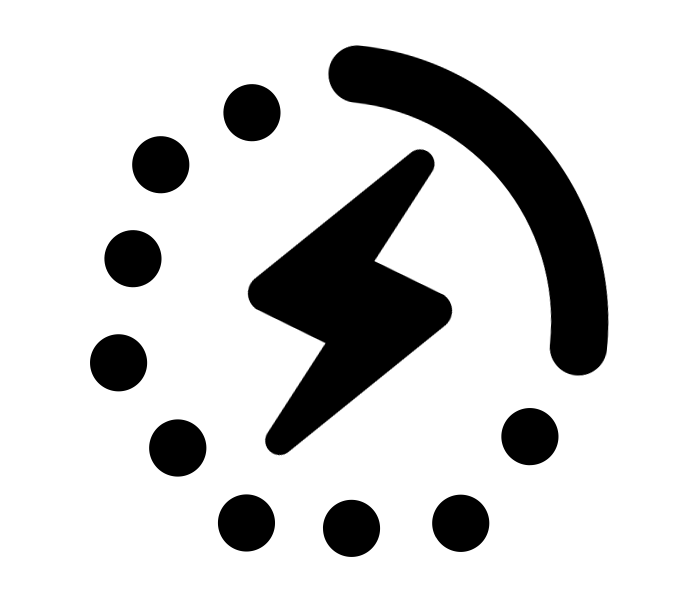

Fast and Secure upstream Kubernetes
Designed for developing Kubernetes Workloads locally

Fast Install
Get a full Upstream Kubernetes system running in under 60 seconds
Safe and Secure
Runs safely on your laptop with state of the art isolation.

Pure Upstream
Binaries directly from the source, delivered to you laptop and configured in seconds!